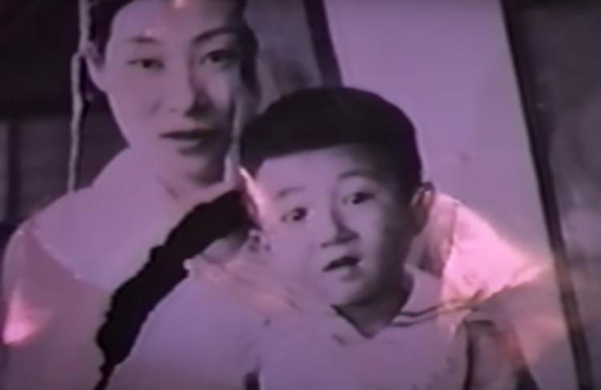

Shuji Terayama
There’s a collection of vivid imagery that continuously pops up on my Pinterest.
Part surreal, dashed with clown-like grotesque, masked figures inhabit a dystopian world of decadence and decay yet they seem exhilarated. Liberated. Unbridled.
Avant Garde Portrait / written by Gabriella Achadinha
Encountering the works of Japanese filmmaker, poet, director and photographer Shuji Terayama, one is usually taken aback and somewhat perplexed.
There’s a quality of time and space that traverses definition.
Are these stills captured from some over-the-top experimental theatre play from the 70s?
Or are these behind-the-scenes from an 80s movie production?
Or could they possibly be a video art exploration into the human condition produced in the 2000s?
Born on the 10th of December 1935, Terayama’s childhood was deeply influenced by the surrounding climate of cultural and social transformation. Japan was sifting through the scattered pieces of nationalistic pride destroyed by post-war devastation.
Hiroshima, Nagasaki. The destruction of its former militaristic identity.
US occupying forces.
War crime trials.
The breaking down of zaibatsu by MacArthur to instate free market capitalism.
Nothing would be the same, or safe, ever again.
This uncertainty and interventional reform frames the background noise that Terayama is subject to yet also parallels the influence of his immediate childhood landscape - the wondrous Mount Osore. Steeped in legend, declared both a hell and a paradise, this range of eight somma volcanoes is regarded as one of the three most sacred sites in Japan. It comes as no surprise that this setting of myth and the dichotomy of nature’s inherent beauty / danger heavily shaped the way in which Terayama approached the mise en scène. This influence appears in his filmic works - Pastoral: To Die in the Country (1974), Throw Away Your Books, Rally in the Streets (1971) - but is offset by the contrast of an urban vein that appears from his student days sponging up the vibrance from the streets of Shinjuku.
Witnessing and being involved within this counter-culture revolution, defined by student protests and the emergence of artistic movements, Terayama founded Tenjo Sajiki - an experimental theatre troupe that embraced a multi-disciplinary practice and included notable members such as Tadanori Yokoo and Kohei Ando.
Rio Kishida co-wrote several scripts and essays for Tenjo Sajiki and deserves a special mention for her contribution to the angura / underground theatre movement, not only as a female writer / director operating within a particularly patriarchal system but mostly for her excellence in weaving tales of human desire and folly with relevant societal commentary.
Butterfly Dress Pledge (1974)
Throw Away Your Books, Rally in the Streets (1971)
 An Attempt to Describe the Measure of a Man (1977)
An Attempt to Describe the Measure of a Man (1977)
Dubbed as shigaigeki, these plays would take place on the streets of Tokyo subsequently breaking the convention of traditional theatre space as a means of activating citizen participation.
Knock is a succinct example of Terayamas’ focus on extending the practical (and often legal) limitations of involving strangers and provoking discourse via infringing upon both public and private spaces. Set in a time less policed by regulations surrounding the public domain, these interventions allowed for a momentary movement characterised by the anarchic and disillusioned.
Terayama would translate these directorial skills over to cinema as he continued to grapple with themes of illness (nephritis would follow him from his early 20s and eventually be the cause of his death in 1983), identity and familial trauma. Presented within short slices of experimentation, there’s a poetic wave of the dream-like blurring reality. In Smallpox Tale (1975) a flashing of the nightmarish transports one straight into the anxiety and desire Terayama delves into on the daily. Snails slug over a bandaged face, nails impale a figure in pain as a soft blue light douses the scene and three Macbethian Wayward Sisters maniacally unwrap the mummy-like layers of a make-up donned man. These short films so characteristic of his style are glimpses into the colliding of the internal and the external.
Persons battling an inner trauma are thrust into a world exhibiting a nonsensical absurdity that is impossible to reckon with. He manages to do this all whilst creating visually intense imagery that casts each still as its own artwork, similar to John Waters and Alejandro Jodorowsky.
Surrealism marks his oeuvre with a consistent play of eroticism and violence in poking at societal norms, this can be seen in The Emperor Tomato Ketchup (1971) which outlines the irony of instigating and normalising war yet condemning the sexual. A plethora of characters, Dada-esque dialogue and quintessential mixed-mangled vibrant make-up artistry and styling sets his work in a period known for its kick-back against any remnants of normalcy astray from the 40s and 50s. Though his depiction of the erotic can be viewed as sexist and this needs to be considered in analysing his creative output. As Ashley Chang explores in her article Does Shuji Terayama’s portrayal of sexuality and women reflect the position of post-1960 Japan? for Intermission Time:
‘Terayama presents controversial topics such as queer culture and sexual liberation in his work through vivid pornographic images. Yet, the women in his film are often marginalized.
They are presented in a male gaze regardless of his attempts to depart from the conventions.
...…..when female characters do speak, most of the time, they are talking with the characters or narrating instead of breaking the fourth wall.
The absence of agency in female characters foregrounds a gendered national ideology. Military capability and aggression, both are associated with masculinity, equate to the nation’s strength.
While Terayama condemns the western influence and capitalism in his films, Japan’s involvement in the Second World War was also an attempt to take a dominant position that the U.S. ended up being.’
This poignant observation by Ashley Chang encapsulates the presence of victim-blaming, ‘rape-seeking’ and mother-berating seen in Terayama’s works - a trademark of the shifting over of ‘emasculated’ rage to the already over-burdened feminine. When classifying his work as breaking away from outdated, traditional notions of sexuality it’s within the framework of the young male lens. As much as he was a trailblazer in ridiculing general societal taboos, he was ultimately unable to negotiate this intricate line of archaic misogynistic exploitation (re-instilling) versus redefining.
The mother as an ambivalent force is presented more sensitively within his poetry.
Utilising the form of tanka, Terayama compares his grapplings within a society stripped of international power against that of anguish arising from personal memory.
Pastoral: To Die in the Country (1974)
Rio Kishida
Emperor Tomato Ketchup (1971)
withering
the sunflowers still
in offering
at my father’s tomb --
it’s shorter than I
a man, who knows
my dead father’s
shoe size,
came to see me one day
... nightmare
fixed
with my cold gunshot
a sparrow on the roof
might be
my mother
coming alone
to the sold rice field
on a winter night
I'm burying
my mother's scarlet comb
I gently comb
the turtledove
with my dead mother's
scarlet comb --
its down keeps falling out
this wind
carrying carrot seeds
connects
the orphan,
sunset, and me
birds banished
from the sky,
time, beasts
all collected here
in my arc-like toy box
in order to sew up
the horizon
my sister hid
a silk needle
in the sewing box
while an ant
toiled from the dahlia
to the ash tray
I was forming
a beautiful lie
(source: NeverEnding Story)
Video Letter (1983)
Grass Labyrinth (1979)

Video Letter (1983)
The merging of his poetry and film expertise comes to a crescendo in his collaboration with poet Shuntarô Tanikawa presented in Video Letter (1982). This nostalgia-drenched exploration of the then-novel video medium brings all of his tools to one site of experience.
The photo album (full circle to the Pinterest bombardment of Terayama’s photo series The People of the Dog-God Family), tanka inserts, personal scribbles and cinematic snippets all collide into one final exploration of the transitory human condition and memory. The camera moves slowly over his bruised and disintegrating body as he openly declares that ‘this is how things are these days’.
An honest acceptance of ephemerality.
He would pass away a few months later at the age of 47.
When one browses through his imagery it feels like an intimate moment of holding a photo album and registering the joy, conflict and interpersonal standings between each family member.
Of course, this family being a rather eccentric troupe often made up in clown-face and performing exceptionally political acts of rebellion. A family for a misunderstood generation of youth simply seeking an alternative to a ludicrous system of capitalised aggression, searching for an alternative embrace of belonging.
And while he may have recognised the fleeting nature of our physical experience, I wonder if he fully comprehended how his work would surpass this and remain as relevant, and influential, for an international community of misfits for decades to come.